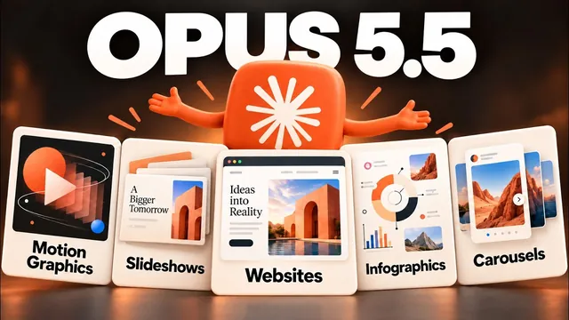

Opus 5.5가 디자인 판을 갈아버렸다 (미친 활용 5가지)

원본 영상 보기 →
- 디자인 시스템 한 번이 이후 모든 결과물의 품질을 결정해요
- 영상도 코드로 만들면 싸고 수정이 쉬워요
- 레퍼런스와 제약이 품질을 좌우합니다
한 줄 요약
Claude Opus 5.5와 데스크톱 앱에 들어온 Claude Design으로 디자인 시스템을 한 번 세팅하면, 영상 애니메이션부터 슬라이드, 랜딩 페이지, 소셜 캐러셀까지 브랜드에 맞게 빠르게 나옵니다. 반복되는 작업은 스킬과 예약 작업으로 넘기는 방법까지 보여줘요.
전체 내용 정리
모든 건 디자인 시스템 설정에서 시작합니다
Claude Design이 프레젠테이션·문서와 함께 Claude 데스크톱의 Cowork와 Claude Code에 통합됐어요. 편집용 캔버스가 생겼고, 공유한 캔버스는 팀원 모두의 아티팩트에 나타나서 협업이 쉽습니다.
설정에서 디자인 시스템 → 새 디자인 시스템 → "Claude로 만들기"를 고르고, 웹사이트 링크나 로고·이미지 자산을 넣으면 돼요. 브랜드가 아직 없다면 Dribbble에서 마음에 드는 스타일을 찾아 넣거나, 다른 회사 사이트 링크를 참고로 줄 수도 있습니다.
결과는 라이브 아티팩트로 나오고 색상을 직접 바꾸거나 요소에 코멘트를 달 수 있어요. 처음에 몇 번 다듬어 두면 이후 모든 디자인이 자동으로 브랜드에 맞게 나옵니다.
디자인 시스템 사본을 컴퓨터 폴더에도 저장해 두면 다른 AI 서비스에서도 쓸 수 있고, 고객사나 회사마다 따로 만들어 둘 수도 있어요.
영상 애니메이션을 코드만으로 만듭니다
가장 인상적인 활용이에요. 비디오·이미지 모델 없이 순수 코드로 만들기 때문에 비용이 훨씬 쌉니다.
15~20초 설명 영상이라고 주제와 화면비를 말하고 "전부 코드로 만들어"라고 요청해요. 먼저 스크립트와 스토리보드를 받아서 검토하고 승인한 뒤에 영상을 만들게 하는 게 좋습니다. 각 장면을 라이브 아티팩트에 따로 넣어 달라고 하면, 마음에 안 드는 장면에만 코멘트를 달아 고치기 쉬워요. 완성되면 MP4로 내보냅니다.
정적인 슬라이드 설명 영상 링크를 주고 모션그래픽으로 바꾸게 하는 편집용 스킬도 만들었는데, 자막 없이 대본 흐름에 맞춰 움직이는 결과가 나왔어요. 이 스킬은 전사, 클립 자르기, 자막 추가도 합니다. 로고를 2~5초 인트로로 만들되 5가지 변형을 받아 MP4로 내보내라는 식의 요청도 되고요.
브랜드 슬라이드와 월간 보고서
슬라이드 옵션을 고르면 슬라이드 포맷이 자동으로 적용되고 디자인 시스템도 고를 수 있어요.
월간 마케팅 보고서를 예로 들어 볼게요. 분석 채널을 알려 주고 최근 30일과 그 이전 30일을 비교하라고 시킵니다. 이때 두 문장을 꼭 넣으세요. "가능한 곳마다 차트나 시각 자료를 쓰라"와 "필요한 곳에 애니메이션이나 단계별 공개를 넣으라"요. 글만 빽빽한 슬라이드를 피할 수 있습니다.
결과물은 앱 안에서 바로 발표할 수 있고 PDF나 PowerPoint로 내려받을 수 있어요. 이미지·표·도형·텍스트를 직접 편집할 수도 있고요. 이 과정을 스킬로 저장해 두면 매월 마지막 날 자동 실행되게 예약 작업으로 걸 수 있습니다.
랜딩 페이지는 조정 패널과 레퍼런스를 함께 요청하세요
Opus 5.5는 웹사이트·랜딩 페이지 디자인도 강합니다.
프롬프트에 조정 패널(tweak panel)을 넣어 달라고 하면 스타일을 바로 바꿔 보며 여러 변형을 비교할 수 있어요. 모바일 화면 미리보기도 즉시 됩니다.
마음에 드는 레퍼런스 사이트나 이미지를 함께 주고, 회사와 사이트의 "왜"를 간단히 설명하면 방향이 맞아요. 문구는 보통 손봐야 하지만 디자인은 첫 결과부터 꽤 괜찮습니다.
캐러셀과 인포그래픽은 스킬로 굳혀 두세요
링크드인 캐러셀은 Pinterest에서 "carousel design LinkedIn" 같은 키워드로 레이아웃을 찾아 이미지를 붙여넣으면 품질이 크게 올라가요.
프롬프트에는 대상 독자, 만드는 이유, 넣을 CTA, 장수를 적습니다. 이미지당 최대 단어 수도 꼭 지정하세요. 글이 넘치는 걸 막아 줍니다. 조정 패널로 색·배경·글자 크기도 빠르게 바꿔 보고요. 결과는 PDF나 이미지로 내려받습니다.
마음에 드는 결과가 나오면 그 과정과 템플릿을 스킬로 저장하세요. 여러 스타일 카테고리를 한 스킬에 넣어 두고 매번 골라 쓸 수도 있습니다. 인포그래픽도 같은 방식이에요.
핵심 인사이트
- 디자인 시스템 한 번이 이후 모든 결과물의 품질을 결정해요: 처음에 시간을 들여 브랜드 규칙을 저장해 두면, 영상·슬라이드·캐러셀 모두 처음부터 브랜드에 맞게 나옵니다.
- 영상도 코드로 만들면 싸고 수정이 쉬워요: 모델이 영상을 그리는 방식이 아니라 장면별 코드라서, 장면 단위로 고치고 MP4로 내보낼 수 있습니다.
- 레퍼런스와 제약이 품질을 좌우합니다: 마음에 드는 사례 이미지, 대상·목적·CTA, 이미지당 단어 수 제한 같은 제약을 줄수록 결과가 좋아져요.
- 좋은 결과는 스킬로 굳혀서 자동화하세요: 한 번 성공한 과정을 스킬과 예약 작업으로 바꾸면 반복 디자인 업무가 사라집니다.
오늘 당장 해볼 것
- 내 웹사이트 링크와 로고를 AI에 주고 "내 브랜드의 색·글꼴·톤 규칙을 정리해 줘"라고 요청해 디자인 시스템 초안을 만들어 보세요. 이게 있어야 다음 작업이 다 편해집니다.
- 마음에 드는 카드뉴스·캐러셀 사례 3개를 Pinterest에서 저장해 레퍼런스로 주고, 대상 독자와 이미지당 최대 단어 수를 정해 첫 시안을 받아 보세요.
- 매달 반복해서 만드는 보고서나 제안서가 있다면 그 작성 순서를 적어 보세요. "이 과정을 저장해서 매월 마지막 날 자동으로 실행하는 작업으로 만들어 줘"라고 하면 됩니다.